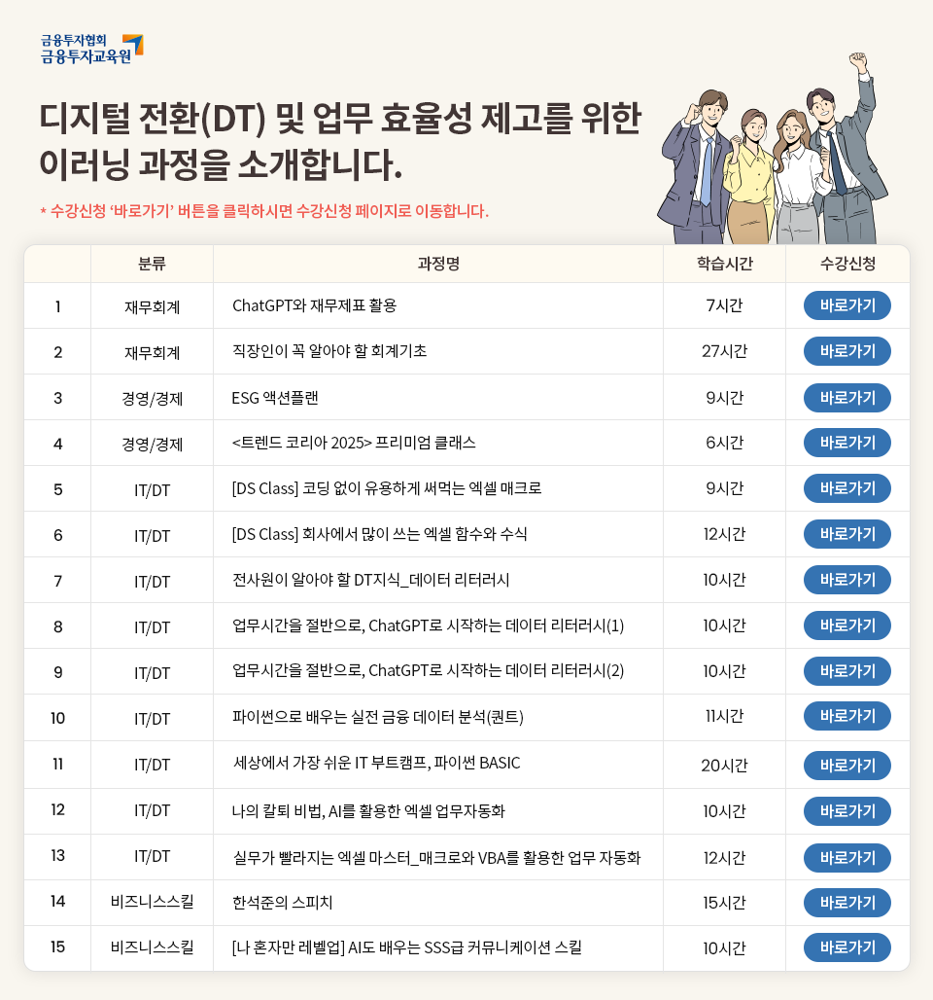

ChatGPT와 재무제표 활용
직장인이 꼭 알아야 할 회계기초
ESG 액션플랜
<트렌드 코리아 2025> 프리미엄 클래스
[DS Class] 코딩 없이 유용하게 써먹는 엑셀 매크로
[DS Class] 회사에서 많이 쓰는 엑셀 함수와 수식
전사원이 알아야 할 DT지식_데이터 리터러시
업무시간을 절반으로, ChatGPT로 시작하는 데이터 리터러시(1)
업무시간을 절반으로, ChatGPT로 시작하는 데이터 리터러시(2)
파이썬으로 배우는 실전 금융 데이터 분석(퀀트)
세상에서 가장 쉬운 IT 부트캠프, 파이썬 BASIC
나의 칼퇴 비법, AI를 활용한 엑셀 업무자동화
실무가 빨라지는 엑셀 마스터_매크로와 VBA를 활용한 업무 자동화
한석준의 스피치
[나 혼자만 레벨업] AI도 배우는 SSS급 커뮤니케이션 스킬